WellCome To Jaipur Tourisum
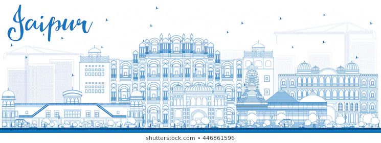
Hawa Mahal
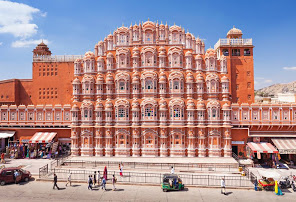
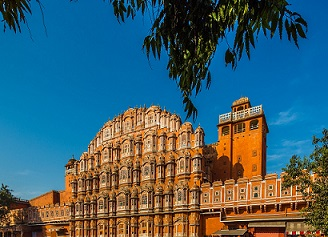
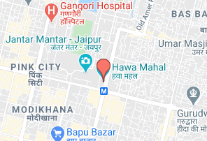
Timing
5:00 PM ⋅ Opens 9:00 AM Mon
Sunday 9:00 AM – 5:00 PM
Monday 9:00 AM – 5:00 PM
Tuesday 9:00 AM – 5:00 PM
Wednesday 9:00 AM – 5:00 PM
Thursday 9:00 AM – 5:00 PM
Friday 9:00 AM – 5:00 PM
Saturday 9:00 AM – 5:00 PM
-
Alternative names = Palace of the Winds, Palace of the Breeze
-
General information
Architectural style = Rajput Architecture
Country = India
State = Rajesthan
Coordinates = 26.9239°N 75.8267°ECoordinates: 26.9239°N 75.8267°E
Completed = 1799
Hawa Mahal
-
Hawa Mahal (English translation: "The Palace of Winds" or "The Palace of Breeze") is a palace in Jaipur, India approximately 300 kilometers from the capital city of Delhi. Built from red and pink sandstone, the palace sits on the edge of the City Palace, Jaipur, and extends to the Zenana, or women's chambers
The structure was built in 1799 by Maharaja Sawai Pratap Singh, the grandson of Maharaja Sawai Jai Singh, who was the founder of Jaipur.[1] He was so inspired by the unique structure of Khetri Mahal that he built this grand and historical palace. It was designed by Lal Chand Ustad. Its five floor exterior is akin to honeycomb with its 953 small windows called Jharokhas decorated with intricate latticework.[2] The original intent of the lattice design was to allow royal ladies to observe everyday life and festivals celebrated in the street below without being seen, since they had to obey the strict rules of "purdah", which forbade them from appearing in public without face coverings. This architectural feature also allowed cool air from the Venturi effect to pass through, thus making the whole area more pleasant during the high temperatures in summer.[2][3][4] Many people see the Hawa Mahal from the street view and think it is the front of the palace, but it is the back.[5]
In 2006, renovation works on the Mahal were undertaken, after a gap of 50 years, to give a facelift to the monument at an estimated cost of Rs 4.568 million.[6] The corporate sector lent a hand to preserve the historical monuments of Jaipur and the Unit Trust of India has adopted Hawa Mahal to maintain it.[7] The palace is an extended part of a huge complex. The stone-carved screens, small casements, and arched roofs are some of the features of this popular tourist spot. The monument also has delicately modeled hanging cornices.
Architecture
-
This palace is a five-story pyramidal shaped monument that rises to about 50 feet (15 m). The top three floors of the structure have the width of a single room, while the first and second floors have patios in front of them. The front elevation, as seen from the street, is like a honeycomb with small portholes. Each porthole has miniature windows and carved sandstone grills, finials and domes. It gives the appearance of a mass of semi-octagonal bays, giving the monument its unique façade. The inner face on the back side of the building consists of chambers built with pillars and corridors with minimal ornamentation, and reach up to the top floor. The interior of the palace has been described as "having rooms of different coloured marbles, relieved by inlaid panels or gilding; while fountains adorn the centre of the courtyard".[8][9]
Lal Chand Ustad was the architect. Built-in red and pink colored sandstone, in keeping with the décor of the other monuments in the city, its color is a full testimony to the epithet of "Pink City" given to Jaipur. Its façade with 953 niches with intricately carved jharokhas (some are made of wood) is a stark contrast to the plain-looking rear side of the structure. Its cultural and architectural heritage is a reflection of a fusion of Hindu Rajput architecture and Islamic Mughal architecture; the Rajput style is seen in the form of domed canopies, fluted pillars, lotus, and floral patterns, and the Islamic style as evident in its stone inlay filigree work and arches (as distinguished from its similarity with the Panch Mahal at Fatehpur Sikri).[10]
The entry to the Hawa Mahal from the city palace side is through an imperial door. It opens into a large courtyard, which has double-storeyed buildings on three sides, with the Hawa Mahal enclosing it on the east side. An archaeological museum is also housed in this courtyard.[11]
Hawa Mahal was also known as the chef-d'œuvre of Maharaja Jai Singh as it was his favourite resort because of the elegance and built-in interior of the Mahal. The cooling effect in the chambers, provided by the breeze passing through the small windows of the façade, was enhanced by the fountains provided at the center of each of the chambers.[12]
The top two floors of the Hawa Mahal are accessed only through ramps. The Mahal is maintained by the archaeological department of the Government of Rajasthan
Jantar Mantar
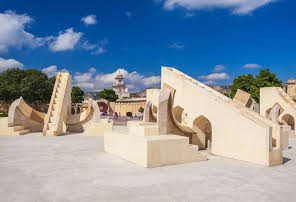
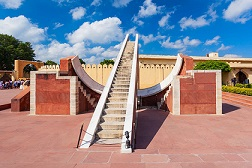
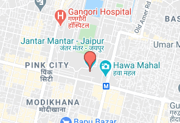
5:00 PM ⋅ Opens 9:00 AM Mon
Sunday 9:00 AM – 5:00 PM
Monday 9:00 AM – 5:00 PM
Tuesday 9:00 AM – 5:00 PM
Wednesday 9:00 AM – 5:00 PM
Thursday 9:00 AM – 5:00 PM
Friday 9:00 AM – 5:00 PM
Saturday 9:00 AM – 5:00 PM
Jartar Mantar
Jantar Mantar - the "Jaipur Observatory" was constructed in the year 1728 by Maharaja Sawai Jai Singh II. The observatory at Jaipur is the biggest one in India. UNESCO inscribed Jantar Mantar Jaipur in the list of World Heritage in July 2010. Jantar Mantar terminology is derived from the word “Jantar” from Sanskrit word “Yantra” which means “Instrument” and the word “Mantar” means mysterious formulae for calculations.
Amar Fort
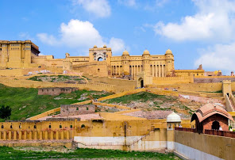/h2>
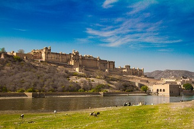
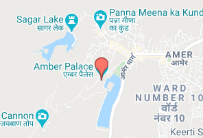
Sunday 8:00 AM – 5:30 PM, 6:30 PM – 9:15 PM
Monday 8:00 AM – 5:30 PM, 6:30 PM – 9:15 PM
Tuesday 8:00 AM – 5:30 PM, 6:30 PM – 9:15 PM
Wednesday 8:00 AM – 5:30 PM, 6:30 PM – 9:15 PM
Thursday 8:00 AM – 5:30 PM, 6:30 PM – 9:15 PM
Friday 8:00 AM – 5:30 PM, 6:30 PM – 9:15 PM
Saturday 8:00 AM – 5:30 PM, 6:30 PM – 9:15 PM
Coordinates = 26.9859°N 75.8507°ECoordinates: 26.9859°N 75.8507°E
Type = Fort and Palace
Site information =
Controlled by Government of Rajasthan
Open to =
the public Yes
Condition = Good
Site history =
Built 967[citation needed]
Built by = Meena
Materials Sandstone and marble
UNESCO World Heritage Site
Type = Cultural
Criteria = ii, iii
Designated = 2013 (37th session)
Part of Hill Forts of Rajasthan
Reference no. = 247
State Party == India
Region = South Asia
Amer Fort
Amer Fort or Amber Fort is a fort located in Amer, Rajasthan, India. Amer is a town with an area of 4 square kilometres (1.5 sq mi)[1] located 11 kilometres (6.8 mi) from Jaipur, the capital of Rajasthan. The town of Amer and the Amber Fort were originally built by the Meenas,[2][unreliable source?] and later it was ruled by Raja Man Singh I. Located high on a hill, it is the principal tourist attraction in Jaipur.[3][4] Amer Fort is known for its artistic style elements. With its large ramparts and series of gates and cobbled paths, the fort overlooks Maota Lake,[4][5][6][7] which is the main source of water for the Amer Palace.
Mughal architecture greatly influenced the architectural style of several buildings of the fort.[8][9][10] Constructed of red sandstone and marble, the attractive, opulent palace is laid out on four levels, each with a courtyard. It consists of the Diwan-e-Aam, or "Hall of Public Audience", the Diwan-e-Khas, or "Hall of Private Audience", the Sheesh Mahal (mirror palace), or Jai Mandir, and the Sukh Niwas where a cool climate is artificially created by winds that blow over a water cascade within the palace. Hence, the Amer Fort is also popularly known as the Amer Palace.[5] The palace was the residence of the Rajput Maharajas and their families. At the entrance to the palace near the fort's Ganesh Gate, there is a temple dedicated to Shila Devi, a goddess of the Chaitanya cult, which was given to Raja Man Singh when he defeated the Raja of Jessore, Bengal in 1604. (Jessore is now in Bangladesh).[4][11][12] Raja Man Singh had 12 queens so he made 12 rooms, one for each Queen. Each room had a staircase connected to the King’s room but the Queens were not to go upstairs. Raja Jai Singh had only one queen so he built one room equal to three old queen’s rooms.
A panoramic view of Amer Fort.
This palace, along with Jaigarh Fort, is located immediately above on the Cheel ka Teela (Hill of Eagles) of the same Aravalli range of hills. The palace and Jaigarh Fort are considered one complex, as the two are connected by a subterranean passage. This passage was meant as an escape route in times of war to enable the royal family members and others in the Amer Fort[13] to shift to the more redoubtable Jaigarh Fort.[5][14][15] Annual tourist visitation to the Amer Palace was reported by the Superintendent of the Department of Archaeology and Museums as 5000 visitors a day, with 1.4 million visitors during 2007.[1] At the 37th session of the World Heritage Committee held in Phnom Penh, Cambodia, in 2013, Amer Fort, along with five other forts of Rajasthan, was declared a UNESCO World Heritage Site as part of the group Hill Forts of Rajasthan.[16]
Etymology
Amer, or Amber, derives its name from the Ambikeshwar Temple, built atop the Cheel ka Teela. Ambikashwara is a local name for the god Shiva. However, local folklore suggests that the fort derives its name from Amba, the Mother Goddess Durga
Geography
Amer Palace is situated on a forested hill promontory that juts into Maota Lake near the town of Amer, about 11 kilometres (6.8 mi) from Jaipur city, the capital of Rajasthan. The palace is near National Highway 11C to Delhi.[18] A narrow 4WD road leads up to the entrance gate, known as the Suraj Pol (Sun Gate) of the fort. It is now considered much more ethical for tourists to take jeep rides up to the fort, instead of riding the elephants.
History
Early history
The settlement at Amer was founded by Raja Alan Singh who was a ruler from the Chanda clan of Meenas in 967 CE.[19][unreliable source?]The Amer Fort, as it stands now, was erected over the remnants of this earlier structure during the reign of Raja Man Singh, the Kachwaha King of Amer.[18][20] The structure was fully expanded by his descendant, Jai Singh I. Even later, Amer Fort underwent improvements and additions by successive rulers over the next 150 years, until the Kachwahas shifted their capital to Jaipur during the time of Sawai Jai Singh II, in 1727
Take over of Amer Fort by Kachwahas
The first Rajput structure was started by Raja Kakil Dev when Amber became his capital in 1036 on the site of present-day Jaigarh Fort of Rajasthan. Much of Amber's current buildings were started or expanded during the reign of Raja Man Singh I in the 1600s. Among the chief building is the Diwan-i-Khas in Amber Palace of Rajasthan and the elaborately painted Ganesh Poll built by the Mirza Raja Jai Singh I.[19]
The current Amer Palace was created in the late 16th century, as a larger palace to the already existing home of the rulers. The older palace, known as Kadimi Mahal (Persian for ancient) is known to be the oldest surviving palace in India. This ancient palace sits in the valley behind the Amer Palace.
Amer was known in the medieval period as Dhundar (meaning attributed to a sacrificial mount in the western frontiers) and ruled by the Kachwahas from the 11th century onwards – between 1037 and 1727 AD, till the capital was moved from Amer to Jaipur.[5] The history of Amer is indelibly linked to these rulers as they founded their empire at Amer.[22]
Many of the ancient structures of the medieval period of the Mairs have been either destroyed or replaced. However, the 16th-century impressive edifice of the Amer Fort and the palace complex within it built by the Rajput Maharajas are very well preserved.[18]
Layout
The Palace is divided into six separate but main sections each with its own entry gate and courtyard. The main entry is through the Suraj Pol (Sun Gate) which leads to the first main courtyard. This was the place where armies would hold victory parades with their war bounty on their return from battles, which were also witnessed by the Royal family's womenfolk through the latticed windows.[23] This gate was built exclusively[clarification needed] and was provided with guards as it was the main entry into the palace. It faced east towards the rising sun, hence the name "". Royal cavalcades and dignitaries entered the palace through this gate.[24]
Jaleb Chowk is an Arabic phrase meaning a place for soldiers to assemble. This is one of the four courtyards of Amer Palace, which was built during Sawai Jai Singh's reign (1693–1743 AD). Maharaja's personal bodyguards held parades here under the command of the army commander or Fauj Bakshi. The Maharaja used to inspect the guards contingent. Adjacent to the courtyard were the horse stables, with the upper-level rooms occupied by the guards.[25]
First courtyard
Ganesh Pol Entrance
An impressive stairway from Jalebi Chowk leads into the main palace grounds. Here, at the entrance to the right of the stairway steps is the Sila Devi temple where the Rajput Maharajas worshipped, starting with Maharaja Mansingh in the 16th century until the 1980s, when the animal sacrifice ritual (sacrifice of a buffalo) practiced by the royalty was stopped.[23]
Ganesh Pol, or the Ganesh Gate, named after the Hindu god Lord Ganesh, who removes all obstacles in life, is the entry into the private palaces of the Maharajas. It is a three-level structure with many frescoes that were also built at the orders of the Mirza Raja Jai Singh (1621–1627). Above this gate is the Suhag Mandir where ladies of the royal family used to watch functions held in the Diwan-i-Aam through latticed marble windows called "jâlîs".[26]
Sila Devi temple
Embossed double leaf silver door entry into the Sila Devi temple
On the right side of the Jalebi Chowk, there is a small but an elegant temple called the Sila Devi temple (Sila Devi was an incarnation of Kali or Durga). The entrance to the temple is through a double door covered in silver with a raised relief. The main deity inside the sanctum is flanked by two lions made of silver. The legend attributed to the installation of this deity is that Maharaja Man Singh sought blessings from Kali for victory in the battle against the Raja of Jessore in Bengal. The goddess instructed the Raja, in a dream, to retrieve her image from the sea bed and install and worship it. The Raja, after he won the battle of Bengal in 1604, retrieved the idol from the sea and installed it in the temple and called it Sila Devi as it was carved out of one single stone slab. At the entrance to the temple, there is also a carving of Lord Ganesha, which is made out of a single piece of coral.[23]
Another version of the Sila Devi installation is that Raja Man Singh, after defeating the Raja of Jessore, received a gift of a black stone slab which was said to have a link to the Mahabharata epic story in which Kansa had killed older siblings of Lord Krishna on this stone. In exchange for this gift, Man Singh returned the kingdom he had won to the Raja of Bengal. This stone was then used to carve the image of Durga Mahishasuramardini, who had slain the demon king Mahishasura and installed it in the fort's temple as Sila Devi. The Sila Devi was worshiped from then onwards as the lineage deity of the Rajput family of Jaipur. However, their family deity continued to be Jamva Mata of Ramgarh.[12]
Another practice that is associated with this temple is the religious rites of animal sacrifice during the festival days of Navrathri (a nine-day festival celebrated twice a year). The practice was to sacrifice a buffalo and also goats on the eighth day of the festival in front of the temple, which would be done in the presence of the royal family, watched by a large gathering of devotees. This practice was banned under the law from 1975, after which the sacrifice was held within the palace grounds in Jaipur, strictly as a private event with only the close kin of the royal family watching the event. However, now the practice of animal sacrifice has been totally stopped at the temple premises and offerings made to the goddess are only of the vegetarian type.[12]
Second courtyard
The second courtyard, up the main stairway of the first level courtyard, houses the Diwan-i-Aam or the Public Audience Hall. Built with a double row of columns, the Diwan-i-Aam is a raised platform with 27 colonnades, each of which is mounted with an elephant-shaped capital, with galleries above it. As the name suggests, the Raja (King) held audience here to hear and receive petitions from the public.[5][23]
Third courtyard
Sheesh Mahal front view
Mirrored ceiling in the Mirror Palace
Sheesh Mahal Interior
The third courtyard is where the private quarters of the Maharaja, his family and attendants were located. This courtyard is entered through the Ganesh Pol or Ganesh Gate, which is embellished with mosaics and sculptures. The courtyard has two buildings, one opposite to the other, separated by a garden laid in the fashion of the Mughal Gardens. The building to the left of the entrance gate is called the Jai Mandir, which is exquisitely embellished with glass inlaid panels and multi-mirrored ceilings. The mirrors are of convex shape and designed with colored foil and paint which would glitter bright under candlelight at the time it was in use. Also known as Sheesh Mahal (mirror palace), the mirror mosaics and colored glasses were a "glittering jewel box in flickering candlelight".[5] Sheesh mahal was built by King Man Singh in the 16th century and completed in 1727. It is also the foundation year of Jaipur state.[27] However, most of this work was allowed to deteriorate during the period 1970–80 but has since then been in the process of restoration and renovation. The walls around the hall hold carved marble relief panels. The hall provides enchanting vistas of the Maota Lake.[23]
On top of Jai Mandir is Jas Mandir, a hall of private audience with floral glass inlays and alabaster relief work.[5]
The other building seen in the courtyard is opposite to the Jai Mandir and is known as the Sukh Niwas or Sukh Mahal (Hall of Pleasure). This hall is approached through a sandalwood door. The walls are decorated with marble inlay work with niches called "chînî khâna". A piped water supply flows through an open channel that runs through this edifice keeping the environs cool, as in an air-conditioned environment. The water from this channel flows into the garden.
Magic flower
A particular attraction here is the "magic flower" carved marble panel at the base of one of the pillars around the mirror palace depicting two hovering butterflies; the flower has seven unique designs including a fishtail, lotus, hooded cobra, elephant trunk, lion's tail, cob of corn, and scorpion, each one of which is visible by a special way of partially hiding the panel with the hands.[5]
Garden
The garden, located between the Jai Mandir on the east and the Sukh Niwas on the west, both built on high platforms in the third courtyard, was built by Mirza Raja Jai Singh (1623–68). It is patterned on the lines of the Chahar Bagh or Mughal Garden. It is in a sunken bed, shaped in a hexagonal design. It is laid out with narrow channels lined with marble around a star-shaped pool with a fountain at the center. Water for the garden flows in cascades through channels from the Sukh Niwas and also from the cascade channels called the "chini khana niches" that originate on the terrace of the Jai Mandir.[15]
Tripolia gate
Tripolia gate means three gates. It is access to the palace from the west. It opens in three directions, one to the Jaleb Chowk, another to the Man Singh Palace and the third one to the Zenana Deorhi on the south.
Lion gate
The Lion Gate, the premier gate, was once a guarded gate; it leads to the private quarters in the palace premises and is titled 'Lion Gate' to suggest strength. Built during the reign of Sawai Jai Singh (1699–1743 AD), it is covered with frescoes; its alignment is zigzag, probably made so from security considerations to attack intruders.
Fourth courtyard
The fourth courtyard is where the Zenana (Royal family women, including concubines or mistresses) lived. This courtyard has many living rooms where the queens resided and who were visited by the king at his choice without being found out as to which queen he was visiting, as all the rooms open into a common corridor.[23]
Palace of Man Singh I
Baradari pavilion at Man Singh I Palace Square.
South of this courtyard lies the Palace of Man Singh I, which is the oldest part of the palace fort.[5] The palace took 25 years to build and was completed in 1599 during the reign of Raja Man Singh I (1589–1614). It is the main palace. In the central courtyard of the palace is the pillared baradari or pavilion; frescoes and colored tiles decorate the rooms on the ground and upper floors. This pavilion (which used to be curtained for privacy) was used as the meeting venue by the maharanis (queens of the royal family). All sides of this pavilion are connected to several small rooms with open balconies. The exit from this palace leads to the town of Amer, a heritage town with many temples, palatial houses and mosques.[4]
The queen mothers and the Raja's consorts lived in this part of the palace in Zanani Deorhi, which also housed their female attendants. The queen mothers took a deep interest in building temples in Amer town.[28]
Conservation
Six forts of Rajasthan, namely, Amber Fort, Chittor Fort, Gagron Fort, Jaisalmer Fort, Kumbhalgarh and Ranthambore Fort were included in the UNESCO World Heritage Site list during the 37th meeting of the World Heritage Committee in Phnom Penh during June 2013. They were recognized as a serial cultural property and examples of Rajput military hill architecture.[29][30]
The town of Amer, which is an integral and inevitable entry point to Amer Palace, is now a heritage town with its economy dependent on the large influx of tourists (4,000 to 5,000 a day during peak tourist season). This town is spread over an area of 4 square kilometres (1.5 sq mi) and has eighteen temples, three Jain mandirs, and three mosques. It has been listed by the World Monument Fund (WMF) as one of the 100 endangered sites in the world; funds for conservation are provided by the Robert Wilson Challenge Grant.[1] As of 2005, some 87 elephants lived within the fort grounds, but several were said to be suffering from malnutrition.[31]
Conservation works have been undertaken at the Amer Palace grounds at a cost of Rs 40 crores (US$8.88 million) by the Amer Development and Management Authority (ADMA). However, these renovation works have been a subject of intense debate and criticism with respect to their suitability to maintain and retain the historicity and architectural features of the ancient structures. Another issue which has been raised is the commercialization of the place.[32]
A film unit shooting a film at the Amer Fort damaged a 500-year-old canopy, demolished the old limestone roof of Chand Mahal, drilled holes to fix sets and spread large quantities of sand in Jaleb Chowk in utter disregard and violation of the Rajasthan Monuments, Archaeological Sites and Antique Act (1961).[33] The Jaipur Bench of the Rajasthan High Court intervened and stopped the film shooting with the observation that "unfortunately, not only the public but especially the concerned (sic) authorities have become blind, deaf and dumb by the glitter of money. Such historical protected monuments have become a source of income."[33]
Concerns of elephant abuse
Several groups have raised concerns regarding the abuse of elephants and their trafficking and have highlighted what some consider the inhumane practice of riding elephants up to the Amber Palace complex.[34] The organization PETA as well as the central zoo authority have taken up this serious issue. The Haathi gaon (Elephant village) is said to be in violation of captive animal controls, and a PETA team found elephants chained with painful spikes, blind, sick and injured elephants forced to work, and elephants with mutilated tusks and ears.[35] In 2017, A New York-based tour operator announced it would use Jeeps instead of elephants for the trip to Amber Fort, saying "It’s not worth endorsing … some really significant mistreatment of animals."[36]
Visitation
If You Want To See Hotal And Flight Click Down
Jaipur City Palace
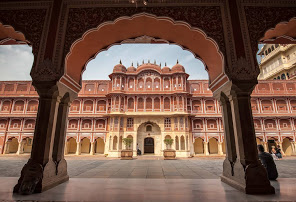
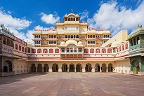
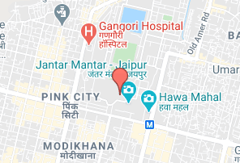
Tuesday 9:30 AM – 5:00 PM
- Wednesday 9:30 AM – 5:00 PM
Thursday 9:30 AM – 5:00 PM
Friday 9:30 AM – 5:00 PM
Saturday 9:30 AM – 5:00 PM
Sunday 9:30 AM – 5:00 PM
- General information
Architectural style = Combination of Rajput, Mughal and European influence
Town or city = Jaipur
Country = India
Coordinates = 26.9257°N 75.8236°ECoordinates: 26.9257°N 75.8236°E
Construction started = 1727
Client = Maharaja Sawai Jai Singh IIpp
City Palace
The City Palace, Jaipur was established at the same time as the city of Jaipur, by Maharaja Sawai Jai Singh II, who moved his court to Jaipur from Amber, in 1727.[1] Jaipur is the present-day capital of the state of Rajasthan, and until 1949 the City Palace was the ceremonial and administrative seat of the Maharaja of Jaipur.[1] The Palace was also the location of religious and cultural events, as well as a patron of arts, commerce, and industry. It now houses the Maharaja Sawai Man Singh II Museum, and continues to be the home of the Jaipur royal family. The royal family of Jaipur is said to be the descendants of Lord Rama. The palace complex has several buildings, various courtyards, galleries, restaurants, and offices of the Museum Trust. The Maharaja Sawai Man Singh II Museum Trust looks after the Museum, and the royal cenotaphs (known as chhatris).
City Palace Histroy
The palace complex lies in the heart of Jaipur city, to the northeast of the very centre, located at 26.9255°N 75.8236°E. The site for the palace was located on the site of a royal hunting lodge on a plain land encircled by a rocky hill range, five miles south of Amber (city). The history of the city palace is closely linked with the history of Jaipur city and its rulers, starting with Maharaja Sawai Jai Singh II who ruled from 1699 to 1744. He is credited with initiating construction of the city complex by building the outer wall of the complex spreading over many acres. Initially, he ruled from his capital at Amber, which lies at a distance of 11 kilometres (6.8 mi) from Jaipur. He shifted his capital from Amber to Jaipur in 1727 because of an increase in population and increasing water shortage. He planned Jaipur city in six blocks separated by broad avenues, on the classical basis of principals of Vastushastra and another similar classical treatise under the architectural guidance of Vidyadar Bhattacharya, a Bengali architect from Naihati of present-day West Bengal who was initially an accounts-clerk in the Amber treasury and later promoted to the office of Chief Architect by the King.[3][4][5][6]
Following Jai Singh's death in 1857, there were internecine wars among the Rajput kings of the region but cordial relations were maintained with the British Raj. Maharaja Ram Singh sided with the British in the Sepoy Mutiny or Uprising of 1857 and established himself with the Imperial rulers. It is to his credit that the city of Jaipur including all of its monuments (including the City Palace) are stucco painted 'Pink' and since then the city has been called the "Pink City".The change in the colour scheme was as an honor of hospitality extended to the Prince of Wales (who later became King Edward VII) on his visit. This color scheme has since then become a trademark of the Jaipur city.[6]
Man Singh II, the adopted son of Maharaja Madho Singh II, was the last Maharaja of Jaipur to rule from the Chandra Mahal palace, in Jaipur. This palace, however, continued to be a residence of the royal family even after the Jaipur kingdom merged with the Indian Union in 1949 (after Indian independence in August 1947) along with other Rajput states of Jodhpur, Jaisalmer and Bikaner. Jaipur became the capital of the Indian state of Rajasthan and Man Singh II had the distinction of becoming the Rajapramukh (present-day Governor of the state) for a time and later was the Ambassador of India to Spain.[6]
While the Jaipur maharanis observed pardah, they enjoyed considerable power and agency. Queens – often the senior-most (Pat-Rani) had a say in the governance of the kingdom or estate in the absence of the ruler. Two queens wielding full authority were Raja Man Singh of Dhoondhar's Bhati clan wife, and Maharaja Rai Singh of Bikaner's wife, Rani Ganga Bai. Wives and mothers of Rajput kings and chiefs also took upon themselves the role of counseling the men over issues they felt transgressed warrior codes of behavior and action.[7]
Women from ruling groups or warrior castes held property in their own names, with full rights over those lands. Many warrior clan women got lands for their maintenance as personal jagirs and haath-kharch ki jagir (personal spending from the province) from both, their natal families, and the families they married into, and administered such lands through personal administrative agents (kamdars, amils, and dewans). From within zenanas, these women remained fully informed about their individual jagirs. Details about crops, law, and order, social problems, appeals from the peasantry, came to them through their stewards or agents, who took instructions directly from the women and were answerable only to them. The women used the revenues from their estates solely as they wished.[7]places to visit in jaipur
City Palace Architecture
The City Palace is in the central-northeast part of the Jaipur city, which is laid in a unique pattern with wide avenues. It is a unique and special complex of several courtyards, buildings, pavilions, gardens, and temples. The most prominent and most visited structures in the complex are the Chandra Mahal, Mubarak Mahal, Shri Govind Dev Temple, and the City Palace Museum.
Allbert Hall Musium
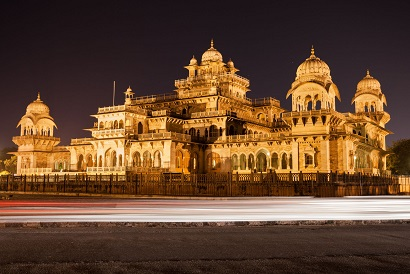
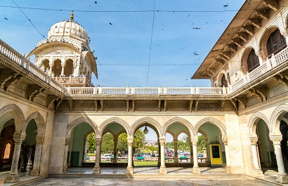
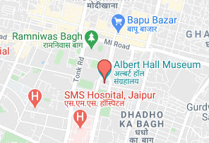
Monday 9:00 AM – Tue 6:00 AM
Tuesday 9:00 AM – 6:00 PM
Wednesday 9:00 AM – 6:00 PM
Thursday 9:00 AM – 6:00 PM
Friday 9:00 AM – 6:00 PM
Saturday 9:00 AM – 6:00 PM
Sunday 9:00 AM – 6:00 PM
Coordinates: 26.91179°N 75.81953°EThe Albert Hall Museum in Jaipur is the oldest museum of the state and functions as the state museum of Rajasthan, India. The building is situated in Ram Niwas garden outside the city wall opposite New gate and is a fine example of Indo-Saracenic architecture. It is also called the Government Central Museum.
Contents
1 History
2 Collection
History
The building was designed by Sir Samuel Swinton Jacob, assisted by Mir Tujumool Hoosein, and was opened as public museum in 1887. Maharaja Ram Singh initially wanted this building to be a town hall, but his successor, Madho Singh II, decided it should be a museum for the art of Jaipur and included as part of the new Ram Nivas Garden.
It is named after King Edward VII (Albert Edward), during whose visit to the city as the Prince of Wales, its foundation stone was laid on 6 February 1876.[1]
Egyptian mummy
Collection
The museum has a rich collection of artifacts including paintings, jewelry, carpets, ivory, stone, metal sculptures, and works in crystal.[2] The collection includes coins from the Gupta, Kushan, Delhi Sultanate, Mughal and British periods.[3]
An Egyptian mummy is the main attraction of this museum.